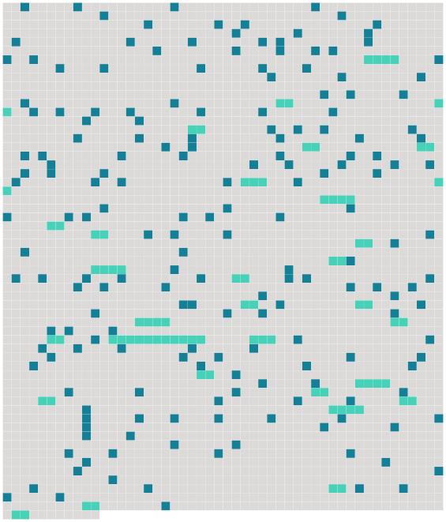

Longueur nb maillons : 219 mentions |
  |
LA ROUILLE [Il] chassait tous les jours, du matin au soir, avec un emportement furieux. [Il] chassait hiver comme été, au printemps comme à l'automne, au marais, quand les règlements interdisaient la plaine et les bois ; [il] chassait au tiré, à courre, au chien d'arrêt, au chien courant, à l'affût, au miroir, au furet. [Il] ne parlait que de chasse, rêvait chasse, répétait sans cesse : « Doit -on être malheureux quand on n'aime pas la chasse!!
» On ne [le] désignait dans la contrée que par [son] petit nom : M. Hector.
[Il] s'appelait le baron Hector Gontran de Coutelier.
[Il] habitait, au milieu des bois, un petit manoir, dont [il] avait hérité ; et bien qu' [il] connût toute la noblesse du département et [rencontrât] tous [ses] représentants mâles dans les rendez -vous de chasse, [il] ne fréquentait assidûment qu'une famille : les Courville, des voisins aimables, alliés à sa race depuis des siècles. Dans cette maison [il] était choyé, aimé, dorloté, et [il] disait : « Si [je] n'étais pas [chasseur] , [je] voudrais ne point vous quitter. » M. de Courville était [son] ami et [son] camarade depuis l'enfance. [2 phrases] [Le baron de Coutelier] allait souvent dîner chez [ses] amis, surtout pour leur raconter [ses] coups de fusil. [Il] avait de longues histoires de chiens et de furets dont [il] parlait comme de personnages marquants qu' [il] aurait beaucoup connus. [Il] dévoilait leurs pensées, leurs intentions, les analysait, les expliquait : « Quand Médor a vu que le râle le faisait courir ainsi, il s'est dit : « Attends, mon gaillard, nous allons rire. » Alors, en [me] faisant signe de la tête d'aller [me] placer au coin du champ de trèfle, [il] s'est mis à quêter de biais, à grand bruit, en remuant les herbes pour pousser le gibier dans l'angle où il ne pourrait plus échapper. [4 phrases] Médor alors tomba en arrêt en [me] regardant ; [je] lui fais un signe, [il] force. --Brrrou--le râle s' [envole--j'épaule--pan] !! --il tombe ; et Médor, en le rapportant, remuait la queue pour [me] dire : « Est -il joué, ce tour -là, [monsieur Hector] ??
» [Il] s'animait, [remuait] les bras, [gesticulait] de tout le corps ; et quand [il] disait la mort du gibier, [il] riait d'un rire formidable, et [demandait] toujours comme conclusion : « Est -elle bonne, celle -là??
»
Aussi, dès qu'un instant de silence se faisait entre deux phrases, dans ces moments de brusques accalmies qui coupent la rumeur des paroles, on entendait tout à coup un air de chasse : « Ton ton, ton taine ton ton », que [le baron] poussait en gonflant les joues comme s' [il] eût tenu [son] cor. [Il] n'avait jamais vécu que pour la chasse et [vieillissait] sans s'en douter ni s'en apercevoir. Brusquement, [il] eut une attaque de rhumatisme et [demeura] deux mois au lit. [Il] faillit mourir de chagrin et d'ennui. Comme [il] n'avait pas de bonne, faisant préparer [sa] cuisine par un vieux serviteur, [il] n'obtenait ni cataplasmes chauds, ni petits soins, ni rien de ce qu'il faut aux souffrants.
[Son] piqueur fut [son] garde-malade, et cet écuyer qui s'ennuyait au moins autant que [son maître] , dormait jour et nuit dans un fauteuil, pendant que [le baron] jurait et s' [exaspérait] entre [ses] draps. Les dames de Courville venaient parfois [le] voir ; et c'étaient pour [lui] des heures de calme et de bien-être. Elles préparaient [sa] tisane, avaient soin du feu, [lui] servaient gentiment [son] déjeuner, sur le bord du lit ; et quand elles partaient [il] murmurait : « Sacrebleu!! [2 phrases] Comme [il] allait mieux et [recommençait] à chasser au marais, [il] vint un soir dîner chez [ses] amis ; mais [il] n'avait plus [son] entrain ni [sa] gaieté. Une pensée incessante [le] torturait, la crainte d'être ressaisi par les douleurs avant l'ouverture. Au moment de prendre congé, alors que les femmes [l'] enveloppaient en un châle, [lui] nouaient un foulard au cou, et qu' [il] se laissait faire pour la première fois de [sa] vie, [il] murmura d'un ton désolé : « Si ça recommence, [je] suis [un homme foutu]
» [6 phrases] Elle était remuante et gaie ; [M. de Coutelier] lui plut tout de suite. Elle s'en amusait comme d'un jouet vivant et passait des heures entières à [l'] interroger sournoisement sur les sentiments des lapins et les machinations des renards.
[Il] distinguait gravement les manières de voir différentes des divers animaux, et leur [prêtait] des plans et des raisonnements subtils comme aux hommes de [sa] connaissance. L'attention qu'elle [lui] donnait [le] ravit ; et, un soir, pour lui témoigner [son] estime, [il] la pria de chasser, ce qu' [il] n'avait encore jamais fait pour aucune femme. [1 phrases]
Ce fut une fête pour [l'équiper] ; tout le monde s'y mit, lui offrit quelque chose ; et elle apparut vêtue en manière d'amazone, avec des bottes, des culottes d'homme, une jupe courte, une jaquette de velours trop étroite pour la gorge, et une casquette de valet de chiens. [Le baron] semblait ému comme s' [il] allait tirer [son] premier coup de fusil.
[Il] lui expliqua minutieusement la direction du vent, les différents arrêts des chiens, la façon de tirer les gibiers ; puis [il] la poussa dans un champ, en la suivant pas à pas, avec la sollicitude d'une nourrice qui regarde son nourrisson marcher pour la première fois. [1 phrases] [Le baron] , derrière [son] élève, tremblait comme une feuille. [Il] balbutiait : « Attention, attention, des per... [2 phrases]
»
Mme Vilers, éperdue, ferma les yeux, lâcha les deux coups, recula d'un pas sous la secousse du fusil : puis, quand elle reprit son sang-froid, elle aperçut [le baron] [qui] dansait comme un fou, et Médor rapportant deux perdrix dans sa gueule.
A dater de ce jour, [M. de Coutelier] fut amoureux d'elle. [Il] disait en levant les yeux : « Quelle femme!! » et [il] venait tous les soirs maintenant pour causer chasse. Un jour, M. de Courville, qui [le] reconduisait et [l'] écoutait s'extasier sur [sa] nouvelle amie, [lui] demanda brusquement : « Pourquoi ne l'épousez [-vous] pas?? » [Le baron] resta saisi : « [Moi] ?? [moi] ?? [3 phrases] . » Et [il] se tut.
Puis serrant précipitamment la main de [son] compagnon, [il] murmura : « Au revoir, [mon] ami, » et disparut à grands pas dans la nuit. [1 phrases] Quand [il] reparut, [il] était pâli par [ses] réflexions, et plus grave que de coutume. [1 phrases] Tâchez de la préparer à [m'] accepter. Sacrebleu, une femme comme ça, on la dirait faite pour [moi] [1 phrases]
» Voulez [-vous] que je m'en charge?? » Mais [le baron] se troubla soudain ; et [balbutiant] : « Non... [1 phrases] , il faut d'abord que [je] fasse un petit voyage... [2 phrases] Dès que [je] serai revenu, [je] vous répondrai définitivement.
» On n'en put obtenir d'autres éclaircissements et [il] partit le lendemain. [1 phrases] Une semaine, deux semaines, trois semaines se passèrent, [M. de Coutelier] ne reparaissait pas. Les Courville, étonnés, inquiets, ne savaient que dire à leur amie qu'ils avaient prévenue de la démarche [du baron]
On envoyait tous les deux jours prendre chez [lui] de [ses] nouvelles ; aucun de [ses] serviteurs n'en avait reçu. Or, un soir, comme Mme Vilers chantait en s'accompagnant au piano, une bonne vint, avec un grand mystère, chercher M. de Courville, en lui disant tout bas qu' [un monsieur] le demandait. [C'] était [le baron, changé, vieilli, en costume de voyage] Dès qu'il vit [son vieil ami] , il [lui] saisit les mains, et, d'une voix un peu fatiguée : « [J'] arrive à l'instant, [mon] cher, et [j'] accours chez vous, [je] n'en puis plus. » Puis [il] hésita, visiblement embarrassé : « [Je] voulais vous dire... [5 phrases]
» [4 phrases] ne [m'] interrogez pas, [je] vous prie, ce serait trop pénible à dire, mais soyez sûr que [j'] agis en... [1 phrases] [Je] ne peux pas... [Je] n'ai pas le droit, vous entendez, pas le droit, d'épouser cette dame. [J'] attendrai qu'elle soit partie pour revenir chez vous ; il [me] serait trop douloureux de la revoir. [1 phrases]
» [1 phrases] On conclut qu'un grand mystère était caché dans la vie [du baron] , qu' [il] avait peut-être des enfants naturels, une vieille liaison. [2 phrases] Un soir, comme [il] avait fortement dîné et qu' [il] titubait un peu, [M. de Coutelier] , en fumant sa pipe le soir avec M. de Courville, [lui] dit : « Si vous saviez comme [je] pense souvent à votre amie, vous auriez pitié de [moi]
»
» [1 phrases] Enfin, [je] n'aurais pas cru ce qui est arrivé. [1 phrases]
» Depuis vingt ans, [mon] ami, je ne vis que pour la chasse. [Je] n'aime que ça, vous le savez, [je] ne m'occupe que de ça. Aussi, au moment de contracter des devoirs envers cette dame, un scrupule, un scrupule de conscience [m'] est venu. Depuis le temps que [j'] ai perdu l'habitude de.. de.. de l'amour, enfin, [je] ne savais plus si [je] serais encore capable de... [10 phrases] Et puis [j'] avais autre chose à faire. [J'] aime mieux tirer un coup de fusil. Bref, au moment de m'engager devant le maire et le prêtre à.. à.. ce que vous savez, [j'] ai eu peur. [Je] me suis dit : Bigre, mais si... [1 phrases] [j'] allais rater. Un honnête homme ne manque jamais à ses engagements ; et [je] prenais là un engagement sacré vis-à-vis de cette personne.
Enfin, pour en avoir le coeur net, [je] me suis promis d'aller passer huit jours à Paris. [2 phrases] [J'] ai pris ce qu'il y avait de mieux dans tous les genres. [Je] vous assure qu'elles ont fait ce qu'elles ont pu... [6 phrases] « [J'] ai attendu alors quinze jours, trois semaines, espérant toujours. [J'] ai mangé dans les restaurants un tas de choses poivrées, qui m'ont perdu l'estomac, et... [3 phrases] « Vous comprenez que, dans ces circonstances, devant cette constatation, [je] ne pouvais que... [2 phrases] Ce que [j'] ai fait. [1 phrases] Il serra gravement les mains [du baron] en [lui] disant : « Je [vous] plains, » et [le] reconduisit jusqu'à mi-chemin de [sa] demeure. [1 phrases] Mais Mme de Courville ne riait point ; elle écoutait, très attentive, et lorsque son mari eut achevé, elle répondit avec un grand sérieux : « [Le baron] est un niais, mon cher ; [il] avait peur, voilà tout. [1 phrases]
» |
 |
La ressource peut être téléchargée sur la page Ortolang
Si vous avez des questions ou vous voyez des erreurs, merci d'envoyer un mail à silvia.federzoni89@gmail.com
Site développé par S. Federzoni (contact)